Bacon Q Dog

Bacon Q. Dog is a 9yr old labradoodle. He prefers to spend his days lounging among the three different beds/couches that his family has gifted him. He enjoys a walk or two around the neighborhood, as long as he can pretend that he doesn't see any of the other animals to avoid the embarrassment of not wanting to admit he has no wolf-like skills in chasing them.
At night just as the rest of the family is ready to relax, Bacon suddenly wants to release all of his energy. He will place his toys on a mini couch and frantically drag the couch around, giving his toys "a ride." There is also a lot of rolling. Lots and lots of rolling.
Photo Gallery


Likes
- Belly rubs
- Playing tug-of-war
- Sneaking onto the couch
Dr. Kenma Wilson
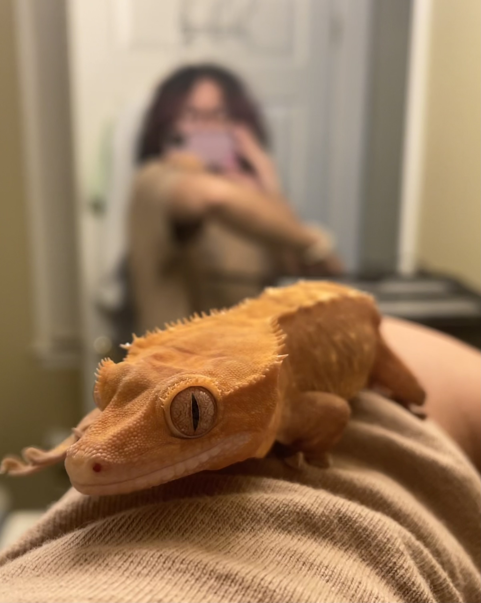Dr. Kenma Wilson (or Kenma for short) is a 4 year old orange crested gecko. She likes to sleep in her PVC tube, hop around at night, and try to eat our fingers.
Photo Gallery
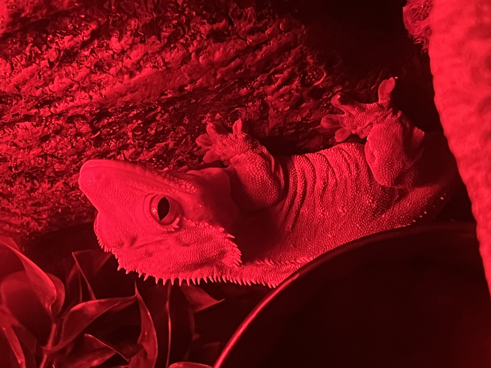 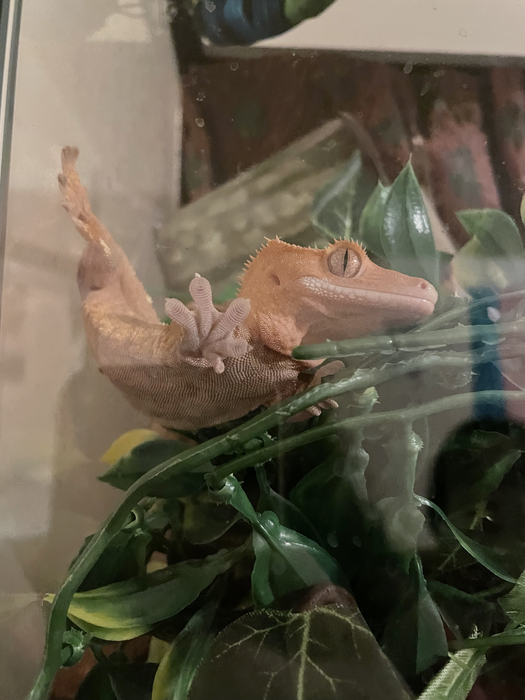 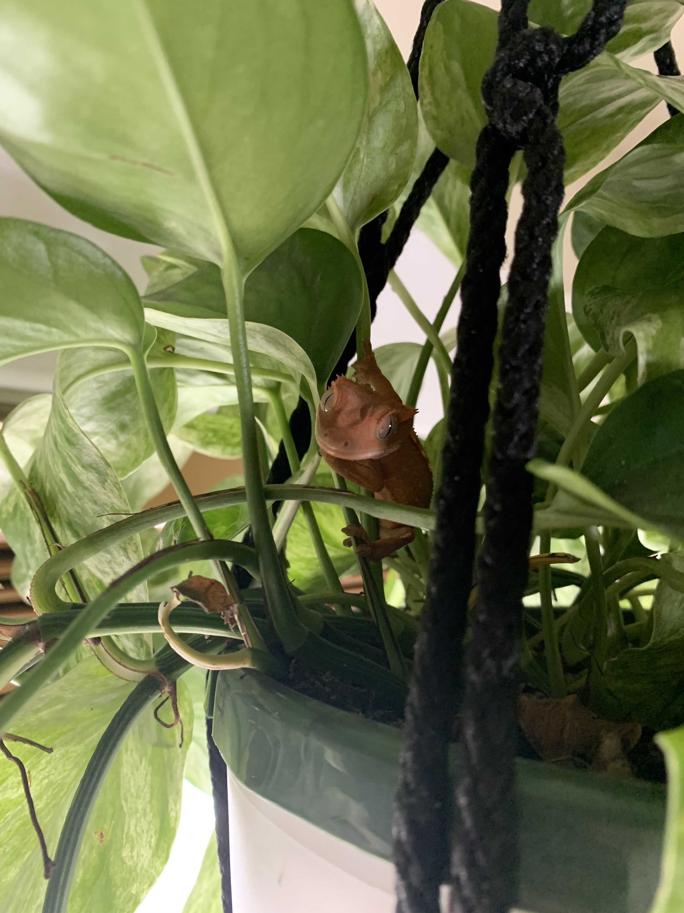Disikes
- The cold
- Being held
- The blender
Van Gogh

Maple is a 4 year old domestic shorthair cat. He has grey fur and a pretty pattern. He enjoys lounging while also multitasking to keep watch on the apartment from his favorite laying/perching spots. He enjoys attention, but is less forthright about wanting it. He also enjoys basking in the sun, playing with his favorite stuffed fish, and making guest cameos on various zoom meetings.
His favorite ways to be pet are scratches behind his ears, below his chin, and gentle taps on his lower back/butt. He would prefer if you did not pick him up, but will tolerate it on some occasions.
Photo Gallery


Likes
- Sleeping
- Paper bags
- Yarn/string
Scruggs
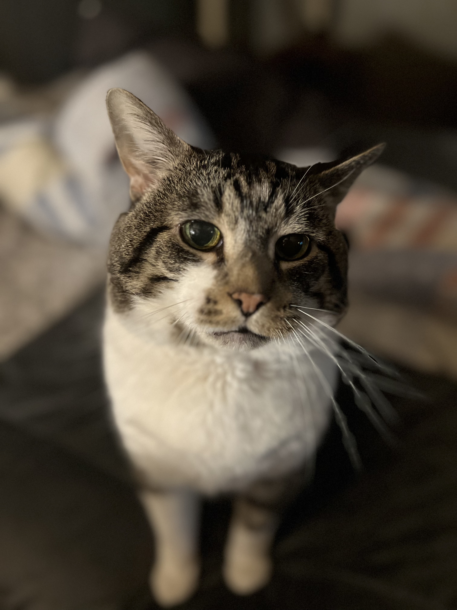Scruggs is Serena's 15 year old domestic shorthair cat who is brown with white markings and white socks. He enjoys lounging on the bed, his water fountain bowl, treats, and pets.
Scruggs tried some turkey this past thanksgiving! He greets me when I visit and loves the attention I give him even though I'm allergic.
Photo Gallery
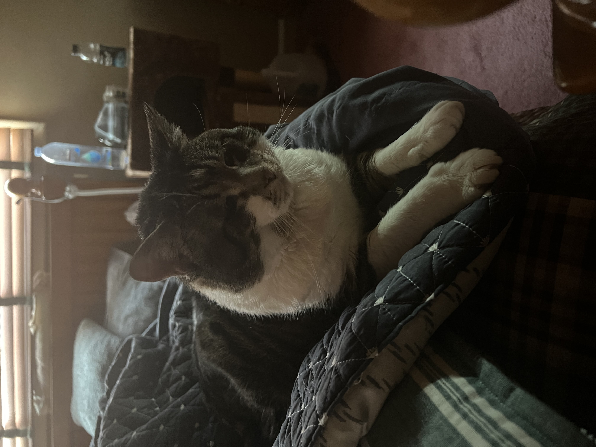 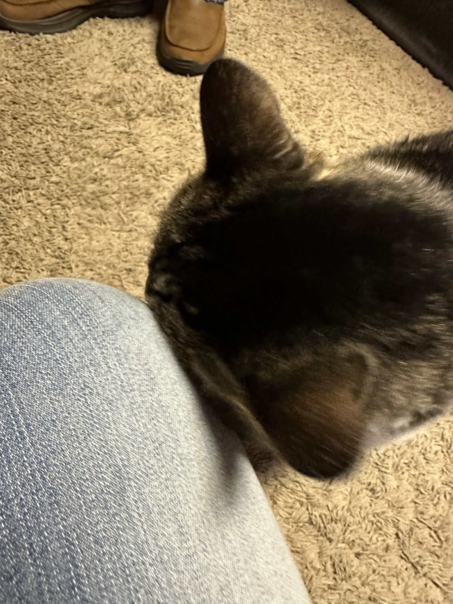 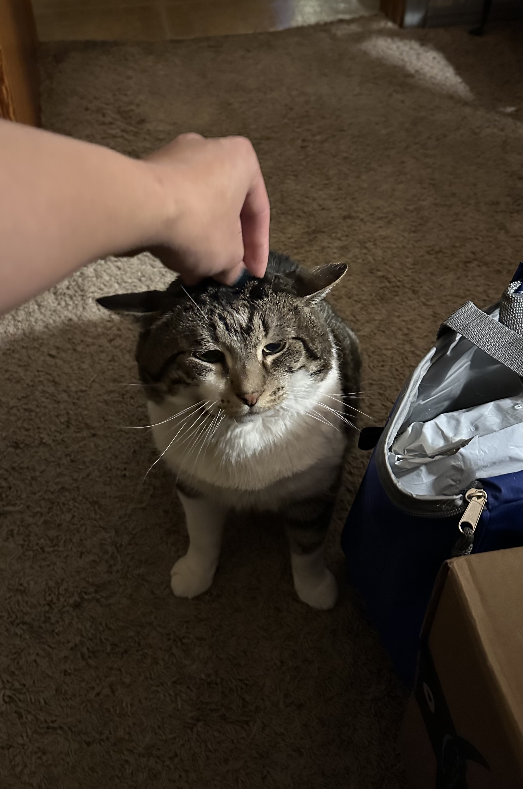Likes
- Sleeping
- Sitting in the bathroom with me
- Headbutting people until they pet him
Kirby
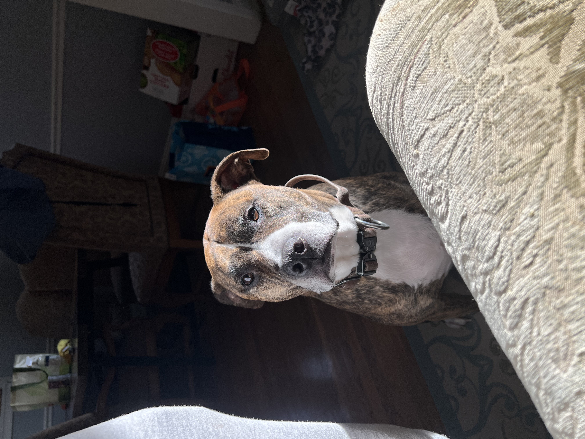Kirby is a 4 year old pitbull/boxer mix who belongs to Serena's brother.
Kirby barks at me every time he's there when I visit. He isn't ever mad or aggressive though, we think he's just been traumatized (he's a rescue).
Photo Gallery
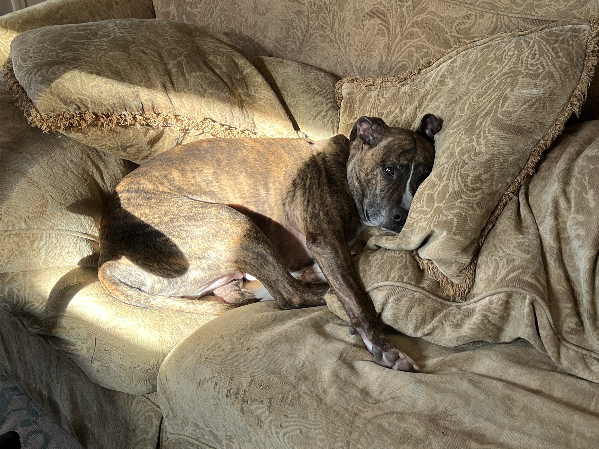 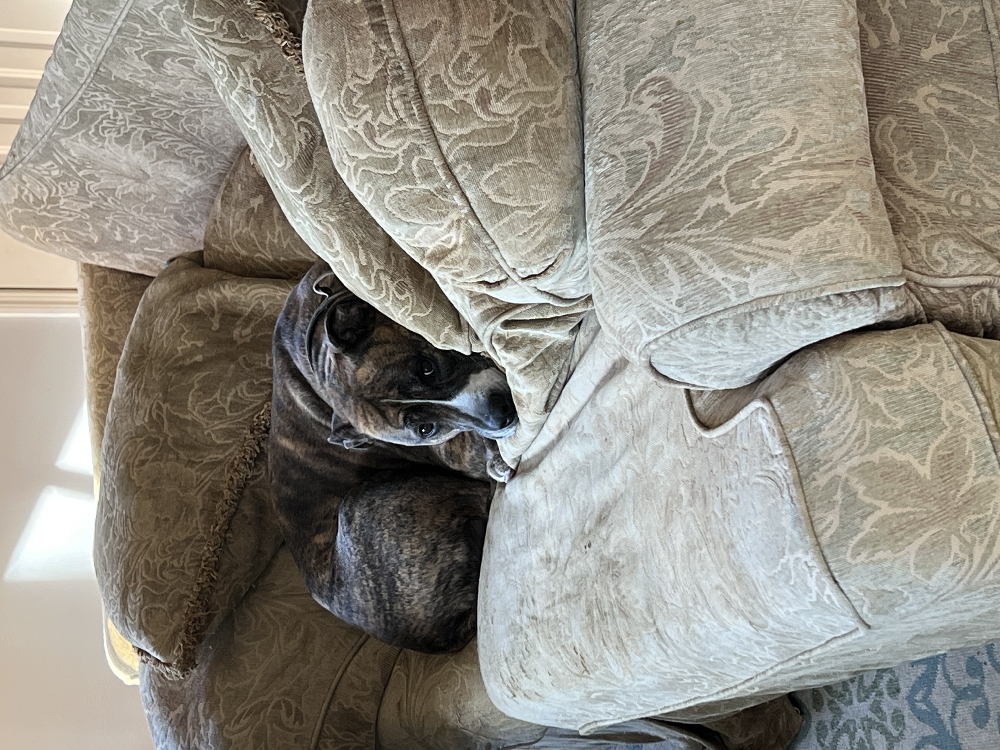Likes
- Treats
- Belly rubs
- Giving you the side eye